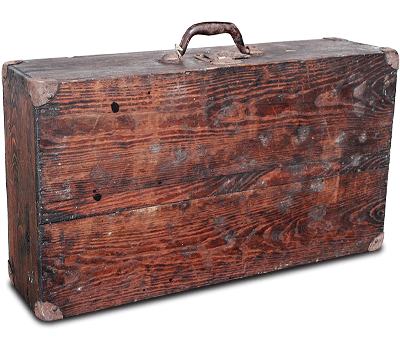

J. Ascaso nació en un pequeño pueblo de montaña de Huesca. Siempre fue un hombre con un gran espíritu emprendedor y trasladarse a la ciudad era su única oportunidad de desarrollo. Dejó el pueblo y viajó a Barcelona con 3.000 de las antiguas pesetas en su bolsillo y su mente llena de ideas. En lo años 50, el espresso empieza a ser popular en España y en el resto de Europa. En Barcelona, particularmente, su popularidad hace nacer una floreciente industria alrededor del mundo del café.
En 1950, J. Ascaso empieza a trabajar para un proveedor de componentes de máquinas espresso, cromando piezas. De 1952 a 1962 J. Ascaso trabajó en la línea producción Gaggia, en la manufactura de componentes para las máquinas de café de la marca en todo el mundo.
Otros fabricantes de cafeteras llegan al mercado. El parque de máquinas espresso instaladas es cada vez mayor y precisa de mantenimiento y reparación. J. Ascaso decide fabricar componentes de todas las máquinas de café que existían en ese momento en el mercado.
Una vez pasados los duros tiempos de inicio del negocio, contrata a un representante comercial que lo introduce en el mundo de los distribuidores y mecánicos profesionales, con unos pocos tipos de tóricas, portafiltros, grifos de vapor, resistencias... recorre toda España, mostrando sus productos a los técnicos locales.
En 1962 Jesús Ascaso empezó su propio negocio para producir y distribuir recambios para máquinas de café espresso. Actualmente, Ascaso vende sus productos en más de 80 países y continua su expansión, creando nuevas divisiones de negocio como la fabricación de cafeteras espresso.
JL. Ascaso, hijo del fundador, es el autor de la diversificación de Ascaso Factory en los últimos años. Se embarcó en la fabricación de máquinas de café espresso para unir los conocimientos técnicos con la cultura del espresso.
La filosofía “for coffee lovers” había nacido.
Jesús Ascaso empieza a trabajar en Gaggia Española. Es su primer contacto con el mundo del espresso.
Funda su propia empresa. Se dedicará al diseño, la fabricación y comercialización de recambios para máquinas de café.
Cambio de instalaciones.
Expansión en el mercado internacional.
Presentación del catálogo General con más de 8.000 referencias.
Nuevo cambio de instalaciones (3.000 m²) y ampliación del catálogo a más de 15.000 referencias.
Nace la idea de fabricar máquinas de café espresso, de la mano de José Luis Ascaso.
Se obtiene la certificación ISO 9001.
Ampliación de instalaciones y presencia en más de 50 países.
División Recambios: más de 23.000 referencias en su Catálogo.
División Fábrica Máquinas de Café: 4 lineas de cafeteras y 1 línea de molinos.
División Recambios: más de 50.000 referencias.
División Fábrica Máquinas de Café: consolidación de la presencia internacional, como producto de alta calidad aunando tecnología y métodos artesanales.
División Maquinaria Hostelería: ampliación de gama con marcas de primer nivel en exclusiva en España.
División Recambios: más de 80.000 referencias.
División Fábrica Máquinas de Café: 6 líneas de cafeteras y 3 de molinos. Inaguramos nueva fábrica de máquinas de café en Gavà con más de 8000m² dedicados al mundo del espresso y la hostelería.
División Maquinaria Hostelería: se consolida con más de 1800 referencias de producto.
La empresa cumple su 50 aniversario.
División Recambios: más de 90,000 referencias y continúa mejorando su servicio online.
División Fábrica Máquinas de Café: se lanza su nueva gama de modelos profesionales Bar y Barista.
División Maquinaria Hostelería: se amplía el catálogo con más de 3,000 referencias de producto.
Renovamos el Certificado de Calidad ISO9001 (15 años).
División Recambios: 110.000 códigos en Stock. Más marcas (más de 700 fabricantes). Catálogo online actualizado. Apertura Delegación Madrid.
División Máquinas: Sigue la expansión internacional (80 países). Nuevas tecnologías, nuevos productos y una filosofía basada en la calidad, nos permiten seguir consolidando la marca en el mercado mundial.
Ascaso Factory está formada por tres divisiones:

D.N.V. (Det Norske Veritas) ha certificado a Ascaso Factory según la norma ISO 9001.
Implantar la calidad es mucho más que fabricar un buen producto o dar un servicio esmerado. Se trata de una nueva forma de hacer las cosas, que abarca toda la organización. Así lo hemos entendido y hemos querido demostrarlo.
El objetivo ha sido asegurar la calidad de una forma global: hoy, nuestros productos son sometidos a rigurosos tests de verificación en la división de Calidad Interna y nuestros servicios están sistematizados en procesos que nos permiten mejorar los plazos, evitar errores, aumentar la competitividad, fomentar la integración del equipo...
Con este certificado culmina un proceso de implantación de un sistema de aseguramiento de la calidad que forma parte del plan estratégico de Ascaso Factory.
Tel. 01 745 2853
997 337 866
Av. Larco 675 Oficina - 4B.
ventas@ascasoperu.com
comercial@ascasoperu.com
Derechos Reservados Ascaso For Co ee Lover @ copyright 2017